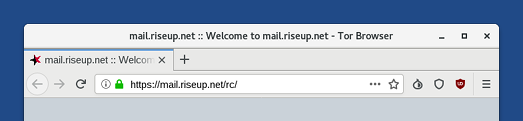

This release fixes many security vulnerabilities. You should upgrade as soon as possible.
Cambios
Actualizaciones y cambios
Update Linux to 4.19.37 and most firmware packages. This should improve the support for newer hardware (graphics, Wi-Fi, etc.).
Enable all available mitigations for the MDS (Microarchitectural Data Sampling) attacks and disable SMT (simultaneous multithreading) on all vulnerable processors to fix the RIDL, Fallout and ZombieLoad security vulnerabilities.
Update Tor Browser to 8.5.
Remove the following applications:
Desktop applications
- Gobby
- Pitivi
- Traverso
Command-line tools
hopenpgp-toolskeyringermonkeysignmonkeyspheremsva-perlpaperkeypwgensssspdf-redact-tools
You can install these applications again using the Additional Software feature.
Thanks to the removal of these less popular applications in 3.14 and the removal of some language packs in 3.13.2, Tails 3.14 is 39 MB smaller than 3.13.
Problemas arreglados
Add back the OpenPGP Applet and Pidgin notification icons to the top navigation bar.

Fix NoScript being deactivated when restarting Tor Browser.
*NoScript* is removed from the set of icons displayed by default in *Tor Browser*. This is how *Tor Browers* looks in Tails 3.14.
To see the list of add-ons that are enabled, choose
 ▸
.
▸
.
Para más detalles, lee nuestro changelog.
Problemas conocidos
Tails fails to start a second time on some computers (#16389)
On some computers, after installing Tails to a USB stick, Tails starts a first time but fails to start a second time. In some cases, only BIOS (Legacy) was affected and the USB stick was not listed in the Boot Menu.
We are still investigating the issue, so if it happens to you, please report your findings by email to tails-testers@boum.org. Mention the model of the computer and the USB stick. This mailing list is archived publicly.
To fix this issue:
Reinstall your USB stick using the same installation method.
Start Tails for the first time and set up an administration password.
Choose to open a Root Terminal.
Ejecuta el siguiente comando:
sgdisk --recompute-chs /dev/bilibop
You can also test an experimental image:
Install it using the same installation methods.
We don't provide any OpenPGP signature or other verification technique for this test image. Please only use it for testing.
Mira la lista de problemas duraderos.
Get Tails 3.14
Para actualizar Tails y mantener tu almacenamiento persistente
Automatic upgrades are available from 3.12, 3.12.1, 3.13, 3.13.1, and 3.13.2 to 3.14.
If you cannot do an automatic upgrade or if Tails fails to start after an automatic upgrade, please try to do a manual upgrade.
Para instalar Tails en una nueva memoria USB
Sigue nuestras instrucciones de instalación:
All the data on this USB stick will be lost.
Para sólo descargar
If you don't need installation or upgrade instructions, you can directly download Tails 3.14:
¿Qué novedades hay?
Tails 3.15 is scheduled for July 9.
Echa un vistazo a nuestro roadmap para ver hacia dónde nos dirigimos.
We need your help and there are many ways to contribute to Tails (donating is only one of them). Come talk to us!